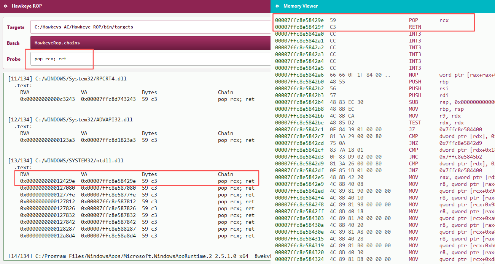
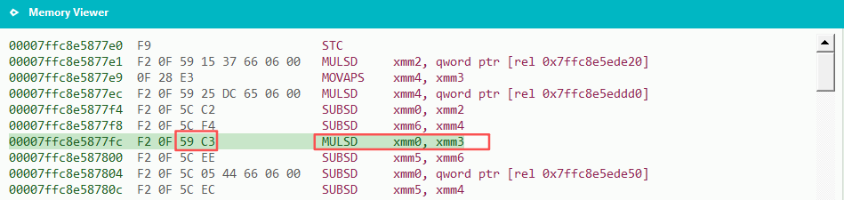

Exploring technical boundaries related to game security
1. What ROP is — principles and first look
1. Return-oriented programming builds on the detail that ret = pop + jmp.
If we place an address at the right stack slot and execute ret, we pop that value into
RIP and can steer the CPU in a controlled way.
2. With several addresses on the stack and repeated ret execution,
we can change control flow multiple times. That is ROP.
A minimal model:
Thread stack High address
┌────────────────────────────────┐
│ Addr F │
│ Addr E │
│ Addr D │
│ Addr C │
│ Addr B │
│ Addr A <── RSP │
└────────────────────────────────┘
Low address
Suppose addresses A through F each point to a ret instruction in some module.
Address A = any ret in ntdll.dll
Address B = any ret in user32.dll
Address C = any ret in kernel32.dll
…
Address F = any ret in dxgi.dll
When ret runs,
ret = pop address A + jump to A + RSP points at B = RIP lands in ntdll.dll.
Because A itself is a ret, we continue:
ret = pop B + jump to B + RSP at C = RIP in user32.dll.
The same pattern through C–F keeps firing ret until RIP reaches dxgi.dll.
A pointless hop across modules — but it captures the core idea of ROP:
with a carefully built stack layout, you steer the CPU instruction stream.
Two tools first
Hawkeye ROP — Windows gadget search (ROP “parts” finder)
Hawkeye Lab — kernel-assisted cheat detection / evaluation for games
Next step: suppose we want HDC hDC = GetDC(NULL);.
Under the x64 calling convention, rcx, rdx, r8, r9 hold the first four arguments.
For GetDC(NULL) we need the first argument (rcx) to be 0 before entering GetDC.
The obvious gadget is mov rcx, 0; ret — assign and return in one shot.
In real modules, “write register + immediate ret” sequences are uncommon and hard to find.
A practical equivalent: place constant 0 on the stack and use pop rcx; ret to load rcx
(see the thread stack sketch below).
Overview using notepad.exe as the target process.
1.Hawkeye ROP searches for gadgets (short code snippets).
We see many pop rcx; ret hits, as in Fig. 2. We usually prefer gadgets in ntdll.dll.
Reason: almost every process loads ntdll.
2.Hawkeye Lab: after discovery, gadgets must be validated. Relocation fixups in executable
regions can accidentally match gadget byte patterns — avoid those hits when you can.
3. Gadgets do not require instruction alignment in the sense used here.
As Fig. 1 shows, pop rcx; ret encodes as 0x59 0xC3.
Address 0x00007ffc8e5877fe can serve as a gadget entry; Hawkeye ROP supports truncated search.

Fig. 1

Fig. 2
Thread stack sketch
Thread stack High address
┌────────────────────────────────┐
│ Addr E │
│ Addr D │ (4)
│ Addr C │ (3)
│ Addr B next gadget addr │ (2)
│ 0ull <── RSP │ (1)
└────────────────────────────────┘
Low address
Suppose RIP → 7ffc8e58429e and RSP → (1). What happens?
pop rcx pops 0ull into rcx; RSP moves to (2)
ret pops the next gadget address into RIP; RSP moves to (3)
RIP now runs the second gadget. We have completed rcx = 0.
What is the heart of ROP? A deliberate stack layout, advanced one step at a time.
How is ROP different from shellcode?
Compare implementation, detection, and engineering cost:
Shellcode is executable bytes you bring in; you typically allocate or map RWX memory and point RIP there.
Shellcode byte patterns are relatively stable and easy to signature; with DEP / NX, “write then execute” is often blocked.
Shellcode is flexible: you can use push / pop freely without planning every stack slot like ROP.
ROP chains existing in-process gadgets; intent lives in the return-address chain, not a fixed instruction template.
ROP jumps within legitimate module code and is less constrained by DEP / NX; control-flow integrity features such as CET are a separate topic (later in this series).
ROP is harder to build: even with search tools or AI help, missing gadgets force module swaps and compromises.
ROP cannot abuse push / pop gadgets casually — they disturb the stack. Winning moves are careful stack design and stepwise execution.
Summary
We started from ret and the stack: ROP is a chain of return addresses consumed by repeated
ret instructions, steering RIP through existing gadgets.
GetDC(NULL) on x64 needs rcx = 0; ideal mov rcx, 0; ret is rare — stack 0 plus pop rcx; ret is the practical path.
Hawkeye ROP finds gadgets; Hawkeye Lab validates them in a live process. Watch relocation false positives and how “truncated” entries relate to alignment in this article.
Vs shellcode: ROP reuses in-process gadgets instead of injecting a shellcode blob, which is friendlier to DEP / NX but demands tighter stack discipline and more engineering; CET will spread with newer hardware and Windows 11 generations.